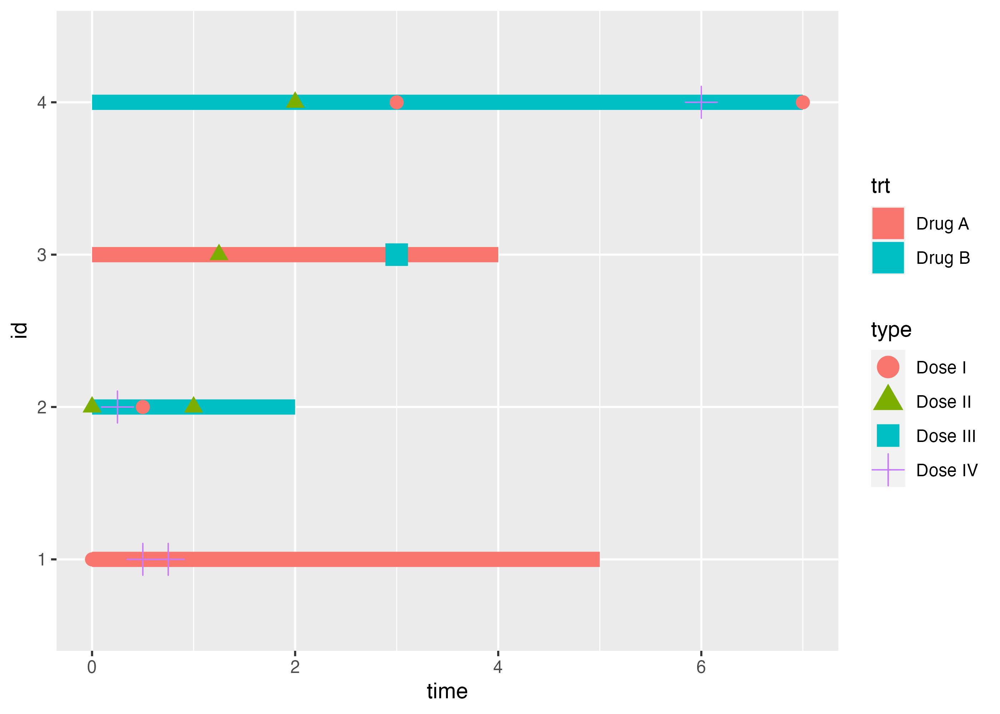
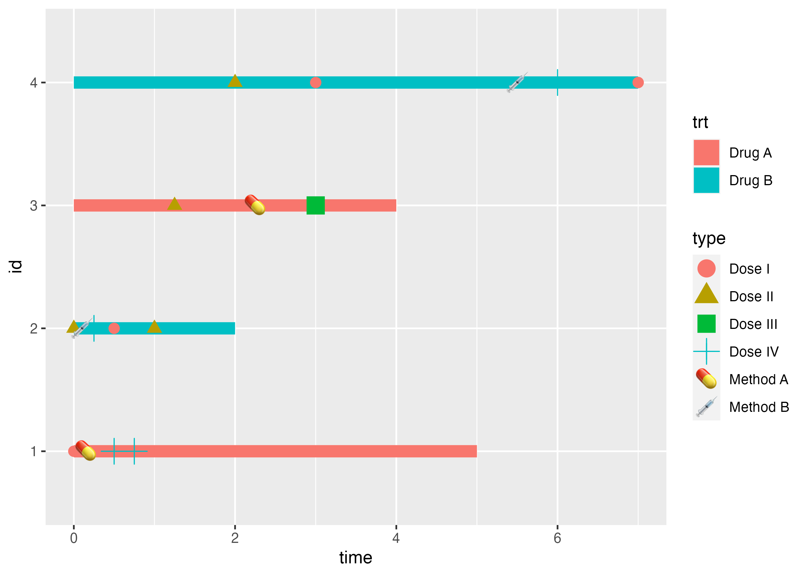
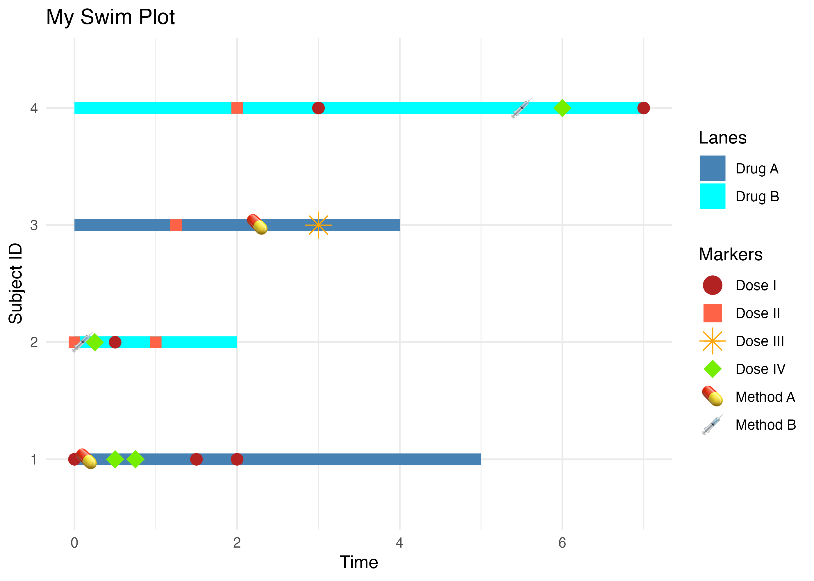
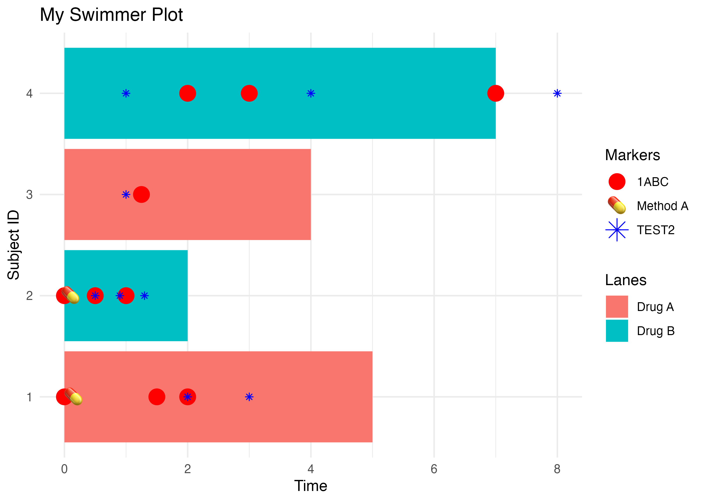

The ggswim package provides an easy set of commands to create “swimmer” plots.
Installation
You can install the development version of ggswim like so:
devtools::install_github("CHOP-CGTInformatics/ggswim")Background
At it’s core, the ggswim package leverages the already fantastic capabilities of ggplot2 and seeks to preserve as much of the flexibility and structure that it provides as possible. Therefore, when using ggswim you will likely notice that much of the documentation and underlying functionality wrap it! So what makes it different? ggswim provides some opinionated decisions to steer plots and the data provided in a way that makes swimmer plots easily accessible and easy to build upon.
Let’s start with some simple examples of how this works.
A Sample Data Set
First we’ll define a few sets of data to work with:
-
patient_data: a dataframe containing per-patient, record-level data -
dose_data_a: a dataframe with two doses corresponding to multiple potential time points for the patients inpatient_data
set.seed(123)
patient_data <-
tibble::tibble(
id = 1:4,
trt = rep_len(c("Drug A", "Drug B"), length.out = 4),
time_to_last_followup = c(5,2,4,7),
time_to_death = ifelse(id %% 2, time_to_last_followup, NA),
end_time = c(5,2,4,7)
)
dose_data_a <- tibble::tibble(
id2 = c(1,1,1,2,2,2,3,4,4,4),
type = sample(c("Dose I", "Dose II"), 10, replace = TRUE),
time = c(0,1.5,2,0,0.5,1,1.25,2,3,7)
)Now, let’s give patient_data a start time of 0 and pivot the table to assign time frames under a time column:
patient_data <- patient_data |>
dplyr::mutate(time_start = 0) |>
tidyr::pivot_longer(cols = c(time_start, time_to_last_followup),
values_to = "time",
names_to = "treatment_group")We’re ready to swim! ggswim() requires the following mapping aesthetics: x, y, and fill and we’ll tack on a static width for good measure:
library(ggswim)
library(ggplot2)
p <- patient_data |>
ggswim(
aes(y = id,
x = time,
fill = trt), width = 0.1
)
p
Awesome! Now let’s throw on some event-specific points, what we’ll call “markers,” given to us in dose_data_a. Notice here that we can add the new data just like a regular ggplot2 series of calls. You’ll also notice the colors aren’t quite what we want right now, but we’ll resolve that later.
add_marker(), like ggswim(), has a set of requires aesthetic mappings as well: x, y, and color. But you can provide others as well, like shape.
p <- p +
add_marker(data = dose_data_a,
mapping = aes(
x = time,
y = id2,
shape = type,
color = type
), size = 3)
p
What if we have multiple marker datasets? Let’s define and tack on dose_data_b:
dose_data_b <- tibble::tibble(
id3 = c(1,1,2,3,4),
type2 = sample(c("Dose III", "Dose IV"), 5, replace = TRUE),
time = c(0.5, 0.75, 0.25, 3, 6)
)
p <- p +
add_marker(data = dose_data_b,
mapping = aes(
x = time,
y = id3,
shape = type2,
color = type2,
), size = 5)
p
Voila! The next set of markers has been added.
Adding Labels and Emojis
Let’s get extra fancy, let’s say instead of using shapes to depict markers we want to use emojis. add_marker() supports those as well! So long as an additional column is provided to the required aesthetic mapping label. We’ll showcase this using a new data set called dose_type to add on to our existing plot:
dose_type <- tibble::tibble(
id4 = c(1,2,3,4),
label = c("💊", "💉", "💊", "💉"),
name = c("Method A", "Method B", "Method A", "Method B"),
time = c(.15, 0.1, 2.25, 5.5)
)
p <- p +
add_marker(
dose_type,
aes(x = time,
y = id4,
label = label,
color = name),
label.size = NA, fill = NA, size = 5
)
p
Wow!
Making the Plot Pretty
Recall earlier that we said ggswim makes use of existing ggplot2 architecture. This means you can use your favorite manipulators to make your ggswim objects look however you please. Below, we take the pre-existing plot, p, and supply some beautification steps before rendering:
p +
ggplot2::labs(x = "Time", y = "Subject ID", color = "Markers") +
ggplot2::ggtitle("My Swim Plot") +
ggplot2::theme_minimal() +
ggplot2::scale_color_manual(name = "Markers",
values = c("firebrick", "tomato", "orange", "chartreuse2", NA, NA)) +
ggplot2::scale_shape_manual(name = "Markers",
values = c(19,15,8,18)) +
ggplot2::scale_fill_manual(name = "Lanes",
values = c("steelblue", "cyan", "skyblue", "steelblue4"))
#> Scale for colour is already present.
#> Adding another scale for colour, which will replace the existing scale.
You’ll notice in the call to scale_color_manual() we had to supply NA values for the labels, we explain that more in the upcoming vignette and hope to provide a better handling method in the future.
Alternative Approach: One-at-a-Time Markers
Let’s say that instead of mapping aesthetic values in your data, you have a structure that is more conducive to adding one marker at a time. This approach is allows for a more direct declaration of values via static aesthetics (versus mapped ones). Let’s make an example below by first setting up some reference data:
For this approach, we must supply a name for the marker value that will appear in the legend since we are no longer defining a mapped color. Now let’s try supplying a few different calls and see how ggswim responds:
-
color/colourdifferences - Different static values
- Supply of different names
patient_data |>
dplyr::mutate(time_start = 0) |>
tidyr::pivot_longer(cols = c(time_start, time_to_last_followup),
values_to = "time",
names_to = "treatment_group") |>
ggswim(
aes(y = id,
x = time,
fill = trt)
) +
add_marker(
data = dose_data_a,
mapping = aes(x = time, y = id2, name = "1ABC"), colour = "red", size = 5
) +
add_marker(
data = dose_data_b,
mapping = aes(x = time, y = id2, name = "TEST2"), color = "blue", shape = 8
) +
add_marker(
data = dose_type_a,
mapping = aes(x = time, y = id4, label = label, color = name),
label.size = NA, fill = NA, size = 5
) +
ggplot2::labs(x = "Time", y = "Subject ID", color = "Markers", fill = "Lanes") +
ggplot2::ggtitle("My Swimmer Plot") +
ggplot2::theme_minimal()
#> Warning: Duplicated aesthetics after name standardisation: colour
#> Duplicated aesthetics after name standardisation: colour
Note that it is better to clean your data ahead of time and to limit the amount of varying behavior you introduce between add_marker() calls. The following issues are known:
- ⚠️ Missing data in a layer followed by a layer with complete data may result in an error.
- This is related to how we enforce re-entry of color mapping into one-at-a-time marker handling and has been seen in examples where
geom_point()doesn’t automatically remove missing values
- This is related to how we enforce re-entry of color mapping into one-at-a-time marker handling and has been seen in examples where
- ⚠️ The legend title for one-at-a-time markers defaults to the first value in the legend
- This can be resolved by updating the
colorandfillarguments inggplot2::labs()
- This can be resolved by updating the